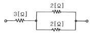

농기계정비기능사 (2013-01-27 기출문제)
1과목: 농기계정비
1. 이양기의 운전 조작부에 속하는 클러치 레버에 속하지 않는 것은?
- 연료 클러치 레버
- 주 클러치 레버
- 조향 클러치 레버
- 식부 클러치 레버
(정답률: 73%)

2. 디젤기관에서 압축압력 측정방법에 관한 설명 중 잘못된 것은?
- 기관 오일, 기동전동기, 배터리가 정상 상태인지 점검한다.
- 기관을 가동 시킨 후 정상 온도를 올린 다음 측정한다.
- 측정하기 전 기관을 크래킹시켜 실린더로부터 이물질을 배출시키고 측정한다.
- 분사노즐 및 예열 플러그를 전부 빼고 시험한다.
(정답률: 77%)
3. 트랙터를 장기간 사용하지 않고 보관하기 위한 방법으로 거리가 먼 것은?
- 각부를 깨끗이 세차한다.
- 냉각수를 새로운 것으로 교체한다.
- 유압기구의 리프트 암을 완전히 올려둔다.
- 타이어에 무리가 가지 않도록 전후 차축을 받쳐둔다.
(정답률: 55%)
4. KS에서 규정하는 트랙터의 호칭 TPO 정격속도 2가지가 옳게 짝지어진 것은?
- 540rpm, 1000rpm
- 640rpm, 1200rpm
- 840rpm, 1500rpm
- 940rpm, 2000rpm
(정답률: 75%)
5. 로터리 경운날의 종류에 속하지 않는 것은?
- ㄷ자형
- 작두형
- 나사형
- 보통형
(정답률: 60%)
6. 조향 클러치의 베어링 부분 점검과정에 대한 설명으로 옳지 않은 것은?
- 가솔린으로 씻고 내부의 먼지, 그리스 등을 완전히 압축공기로 불어내고 깨끗이 한 다음 점검한다.
- 베어링을 돌려보고 가볍게 회전하는가? 걸리거나 끄떡거림이 없는가? 등을 점검한다.
- 취부할 때에는 내륜회전을 하는 것은 외륜을, 외륜회전을 하는 것은 내륜을 타입하도록 한다.
- Z, ZZ형은 회전을 하면서 걸림, 끄덕거림 이외에도 실드면 등도 점검한다.
(정답률: 62%)
7. 트랙터에서 로터베이터의 좌우 수평의 조정은 무엇으로 하는가?
- 유니버설 조인트의 길이
- 상부 리프트 로드의 길이
- 우측 리프트 로드의 길이
- 좌측 리프트 로드의 길이
(정답률: 59%)
8. 변속기에서 변속기의 입력속도가 1500[rpm]이고 입력토크는 20N·m일 때 출력속도가 800[rpm]이 될 경우 출력 토크는 약몇 N·m 인가? (단 동력 전달과정에서 손실 요소는 없다고 가정한다)
- 75
- 10.66
- 37.5
- 4
(정답률: 45%)
9. 파종기에 시비기를 장착하여 종자파종과 시비작업을 동시에 할 수 있는 것은?
- 산파기
- 살포기
- 구절기
- 조파기
(정답률: 75%)
10. 우리나라에서 사용하고 있는 일반적인 벼의 도정작업공정 순서로 옳은 것은?
- 제현과정→정선과정→정미과정→연미과정→선별과정
- 정선과정→제현과정→정미과정→연마과정→선별과정
- 정선과정→제현과정→연미과정→정미과정→선별과정
- 정선과정→제현과정→정미과정→선별과정→연미과정
(정답률: 44%)
11. 보시형 분사펌프에서 조정심을 넣어 분사시기를 조정하는데 0.1㎜ 두께에 몇 도(°)의 분사시기가 조정이 되는가?
- 1°
- 2°
- 3°
- 4°
(정답률: 55%)
12. 트랙터 내연기관의 냉각수에 주로 사용되는 부동액 성분으로 맞는 것은?
- 에틸렌글리콜
- 암모니아수
- 염소
- 칼슘
(정답률: 83%)
13. 3KW의 양수기를 가동하려면 최소 몇 PS의 출력을 내는 엔진이 필요한가? (단 효율은 무시한다.)
- 2.21
- 4.08
- 5.22
- 6.08
(정답률: 63%)
14. 자탈형 콤바인에서 벨 작물을 잡아주고 쓰러진 작물을 일으켜 세우는 역할을 하는 것은?
- 전치리부
- 반송부
- 탈곡부
- 선별부
(정답률: 72%)
15. 동력 분무기 취급 시 상용 압력(kgf/cm3) 범위에 속하는 것은?
- 5 ~ 10
- 25 ~ 30
- 40 ~ 60
- 70 ~ 100
(정답률: 73%)
16. 내연 기관에서 피스톤 링의 작용이 아닌 것은?
- 기밀 작용
- 가스 배출 작용
- 열전도 작용
- 오일 제어 작용
(정답률: 53%)
17. 기관에서 TDC는 무엇을 표시하는 것인가?
- 상사점
- 하사점
- 분사 시기
- 행정
(정답률: 66%)
18. 트랙터 작업기 부착 시 유니버셜 조인트 고정 핀의 돌출량은 약 몇 ㎜ 이상이어야 하는가?
- 1
- 5
- 11
- 30
(정답률: 55%)
19. 동력 경운기 변속 레버가 잘 들어가지 않는 원인으로 거리가 먼 것은?
- 드럼의 유격 확대
- 주 클러치 불량
- 기아마모
- 변속포크 불량
(정답률: 71%)
20. 동력 경운기의 브레이크 드럼은 다음 중 어느 축에 고정되어 있는가?
- 차축
- 주축
- 부 변속축
- 조향 클러치축
(정답률: 48%)
2과목: 농기계전기
21. 일반적인 동력 경운기의 조향클러치 형식은 무엇인가?
- 원추 클러치
- 맞물림 클러치
- 유체 클러치
- 원심 클러치
(정답률: 88%)
22. 직접 분사식 디젤 경운기에 사용해야 할 연료로 가장 알맞은 것은?
- 등유
- 중유
- 휘발유
- 경유
(정답률: 83%)
23. 다음 중 가솔린 기관의 점화 장치를 구성하는 요소가 아닌것은?
- 기화기
- 마그네토
- 점화 플러그
- 단속기
(정답률: 44%)
24. 트랙터에서 토-인[toe-in]이 맞지 않을 때 일어나는 현상으로 거리가 먼 것은?
- 핸들이 몹시 떨린다.
- 조향 시 핸들이 몹시 무겁다.
- 차체에 휨이 생긴다.
- 타이어에 편 마모가 생긴다.
(정답률: 62%)
25. 동력 경운기에서 주 클러치를 연결하여도 힘이 안나거나 전혀 움직이지 않을 때의 원인과 거리가 먼 것은?
- 클러치의 유격이 너무 적어 미끄러지고 있다.
- 마찰판이 타서 심하게 소손되었다.
- 압력스프링의 장력이 너무 세다.
- 클러치 내부에 윤활유가 누유되었다.
(정답률: 64%)
26. 크랭크축의 오일 베어링 간극이 작을 경우 나타나는 현상으로 거리가 먼 것은?
- 오일 공급 불량으로 유막이 파괴될 수 있다.
- 오일 소비량이 커진다.
- 윤활 불량으로 마찰 및 마모가 증대된다.
- 심하면 소결될 수도 있다.
(정답률: 74%)
27. 트랙터에서 엔진오일 점검 시 배기가스에 의해 심하게 오염 되었을 때의 색은?
- 우유색에 가깝다.
- 붉은 색에 가깝다.
- 회색에 가깝다.
- 검은색에 가깝다.
(정답률: 62%)
28. 농업기계 분야에서 유압장치의 주요 3대 요소에 해당되지않는 것은?
- 유압 펌프
- 제어 밸브
- 유압 실린더
- 유압 필터
(정답률: 54%)
29. 트랙터의 운행 중 차동 잠금 장치를 사용하면 안 되는 경우는?
- 진흙 포장에서 주행이 곤란할 때
- 도로 주행 시 커브 길을 회전할 때
- 미끄러운 포장에서 한쪽 바퀴가 공회전 할 때
- 쟁기 작업 시 바퀴가 고랑에서 미끄러졌을 때
(정답률: 86%)
30. 관리기에서 주요 케이블의 유격을 조정 후 주유해야 하는 부문으로 거리가 먼 것은?
- 주 클러치 와이어
- 텐션 암
- 핸들 상하좌우 조정 와이어
- V 벨트
(정답률: 67%)
31. 그림과 같은 직·병렬회로의 합성저항은?

- 1[Ω]
- 2[Ω]
- 4[Ω]
- 7[Ω]
(정답률: 63%)
32. 직류 직권 전동기의 특성으로 옳지 않은 것은?
- 전동기에 부하가 걸렸을 때에는 회전속도는 빠르나 회전력이 작다.
- 부하가 작아지면 회전력이 감소되나 회전수는 점차로 커진다.
- 전동기의 부하가 걸렸을 때에는 회전속도는 낮으나 회전력이 크다.
- 부하를 크게 하면 회전 속도가 낮아지고 흐르는 전류는 커진다.
(정답률: 43%)
33. 물질이 양전기나 음전기를 띠게 되는 현상을 무엇이라고 하는가?
- 접지
- 대전
- 전기량
- 중성자
(정답률: 58%)
34. 축전지의 전해액의 규정량은 보통의 경우 극판 위 몇[㎜] 만큼 채워져 있어야 하는가?
- 7∼10 [㎜]
- 10∼13 [㎜]
- 15∼20 [㎜]
- 20∼25 [㎜]
(정답률: 62%)
35. 다음 중 납축전지에서 충전 및 방전할 때의 작용은?
- 화학적 작용
- 전기적 작용
- 기계적 작용
- 물리적 작용
(정답률: 81%)
36. 직류 전동기에서 외부 회로와 내부 회로를 접속하는 역할을 하는 것은?
- 계자
- 고정자
- 전기자
- 브러시
(정답률: 49%)
37. 4[Ω]과 6[Ω]의 저항을 직렬로 접속할 때 합성 콘덕턴스는?
- 0.5[℧]
- 0.33[℧]
- 0.1[℧]
- 1.0[℧]
(정답률: 45%)
38. 다음 중 1[Wh]는 몇 [J]인가?
- 1[J]
- 3600[J]
- 3.6×106[J]
- 100[J]
(정답률: 56%)
39. 1.5[V]의 전위차로 3[A]의 전류가 2분 동안 흐를 경우 이는 몇 [J]에 해당되는가?
- 9[J]
- 45[J]
- 250[J]
- 540[J]
(정답률: 35%)
40. 축전지를 충전할 때 충전이 완료되어 충전 한계 시에 나타나는 현상이다. 옳은 것은?
- 전해액은 거품이 나고 전해액은 회백색이 되며 두 극판은 유백색의 빛을 띤다.
- 전해액은 변하지 않으나 전해액은 증가되고 두 극판은 유백색으로 변화되며 흰 연기가 난다.
- 축전지에서 고열이 발생되며 축전지의 윗부분이 부풀어 오른다.
- 전해액으로부터 거품이 나고 전해액은 유백색으로 변하며 두 극판은 농갈색으로 변한다.
(정답률: 38%)
3과목: 농기계안전관리
41. 다음 중 농업용 트랙터 전조등에 주로 사용되는 전구는?
- 3[V], 12[W]
- 5[V], 15[W]
- 12[V], 25[W]
- 18[V], 60[W]
(정답률: 66%)
42. 납축전지의 전해액이 자연 감소되었을 때 보충액으로 적합한 것은?
- 묽은황산
- 소금물
- 산성수
- 증류수
(정답률: 84%)
43. 아날로그형 회로 시험기의 사용법 설명 중 잘못된 것은?
- 저항, 직류 전압, 전류 및 교류 전원을 측정할 수 있다.
- 트랜지스터, 다이오드의 절연 저항을 측정할 수 있다.
- L과 C 값은 측정할 수 없다.
- 직류 측정 시 (＋), (-) 단자의 극성에 유의한다.
(정답률: 69%)
44. 60[Hz], 3상 유도전동기 6극의 전부하 시의 회전수가 1140[rpm]이다 이 때 슬립은?
- 4[%]
- 5[%]
- 6[%]
- 7[%].
(정답률: 42%)
45. 전기저항은 단면적이 클수록 어떻게 변하는가?
- 작아진다.
- 커진다.
- 단면적에 관계가 없다.
- 단면적을 변화시킬 때는 항상 증가한다.
(정답률: 70%)
46. 다음 중 안전보건표지의 종류와 의미가 잘못 연결된 것은?
- 녹색 – 안내
- 빨간색 - 금지
- 노란색 – 경고
- 파란색 - 긴급위험
(정답률: 86%)
47. 다음 중 수공구에 의한 재해 예방을 위한 일반적인 유의사항이 아닌 것은?
- 사용 전에 이상 유무를 반드시 점검한다.
- 무리한 힘으로 공구를 취급하지 않는다.
- 사용 전에 충분한 사용법을 숙지하고 익히도록 한다.
- 공구를 사용하고 나면 찾기 쉬운 곳 아무 곳에나 놔둔다.
(정답률: 89%)
48. 농업기계의 정비 시 상시적으로 정밀한 작업을 하는 장소의 작업면 조도 기준으로 옳은 것은?
- 50럭스 이상
- 100럭스 이상
- 150럭스 이상
- 300럭스 이상
(정답률: 63%)
49. 다음 중 배터리의 취급 시 안전사항으로 틀린 것은?
- 전해액 혼합 시 플라스틱 또는 고무용기를 사용할 것
- 축전지 전해액의 온도가 급격히 높아지지 않도록 주의할 것
- 전해액이 담긴 병을 옮길 때는 보호 상자에 넣어 안전하게 운반할 것
- 축전지 표면에 있는 침식물이나 먼지 등을 입으로 불거나 공기호스 등을 이용하여 청소하지 말 것
(정답률: 63%)
50. 다음 중 자연발화의 방지법과 가장 거리가 먼 것은?
- 습도가 낮은 곳에 저장한다.
- 저장실의 온도 상승을 방지한다.
- 해당 물질의 표면적이 넓은 것을 모아 저장한다.
- 통풍이나 저장법을 고려하여 열 축적을 방지한다.
(정답률: 68%)
51. 다음 중 불안전한 상태에 해당하지 않는 것은?
- 작업장 환기 불량
- 안전장치 해체
- 위험한 물질의 방치
- 기계의 정비 불량
(정답률: 50%)
52. 다음 중 농업용 트랙터에 부착하는 안전표지의 목적과 가장 거리가 먼 것은?
- 위험을 확인하기 위하여
- 위험의 정도 및 취급요령을 설명하기 위하여
- 현존 또는 잠재적인 위험을 경고하기 위하여
- 위험을 피할 수 있는 방법을 알려 주기 위하여
(정답률: 37%)
53. 화물을 인양하기 위해 사용되는 와이어로프 중 사용을 하여서는 아니 되는 것은?
- 두 개를 연결한 것
- 킹크가 발생하지 않은 것
- 지름의 감소가 공칭지름의 5% 정도인 것
- 한 꼬임에서 끊어진 소선(素線)의 수가 7% 정도인 것
(정답률: 48%)
54. 다음 중 드릴 작업 시 일감이 드릴과 같이 회전하여 사고가 발생하기 가장 쉬운 때는?
- 처음 시작할 때
- 절삭 저항이 적을 때
- 구멍을 중간정도 뚫을 때
- 거의 구멍이 다 뚫렸을 때
(정답률: 68%)
55. 다음 중 사고 및 재해에 있어 가장 큰 원인이 되는 것은?
- 천재지변
- 작업자의 부주의
- 안전 교육의 부재
- 장비 및 공구의 방치
(정답률: 77%)
56. 다음 중 공구 사용 후의 정리 정돈 방법으로 가장 적합한 것은?
- 지정된 공구 상자에 보관한다.
- 작업장 재료 창고 입구에 보관한다.
- 통풍이 좋은 임의의 장소에 보관한다.
- 햇빛이 잘 드는 외부 장소에 보관한다.
(정답률: 80%)
57. 다음 중 농기계의 장기 보관 방법으로 적절하지 않은 것은?
- 벨트나 체인은 따로 분리하여 보관한다.
- 도장되어 있지 않은 부분은 기름을 발라 둔다.
- 보관 장소는 되도록 채광이 잘 드는 곳을 택한다.
- 실린더 내에 기관 오일을 주유하고 피스톤을 압축 상사점에 놓는다.
(정답률: 68%)
58. 다음 중 보호구를 선정할 때 일반적인 주의사항으로 틀린것은?
- 내구성이 좋아야 한다.
- 신체의 노출이 많도록 한다.
- 해당 작업에 적합하여야 한다.
- 작업 중 활동에 저항을 주지 말아야 한다.
(정답률: 88%)
59. 다음 중 안전 교육 내용으로 적합하지 못한 것은?
- 안전 생활 태도에 관한 사항
- 재해의 발생원인 및 대처에 관한 사항
- 산업재해 보상과 보험금 지급에 관한 사항
- 안전복장 및 보호구의 착용 방법에 관한 사항
(정답률: 87%)
60. 다음 중 가스용접에 있어 준수하여야 하는 안전수칙으로 틀린 것은?
- 밸브의 개폐는 서서히 할 것
- 용기의 온도를 섭씨 40도 이하로 유지할 것
- 용해아세틸렌의 용기는 항상 안전을 위해서 뉘여서 보관할 것
- 작업을 중단하거나 마치고 작업장소를 떠날 경우에는 가스 등의 공급구의 밸브나 콕을 잠글 것
(정답률: 74%)